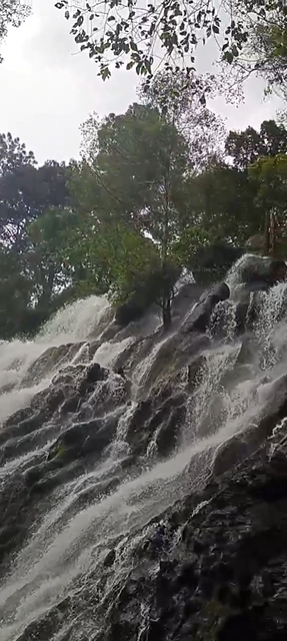
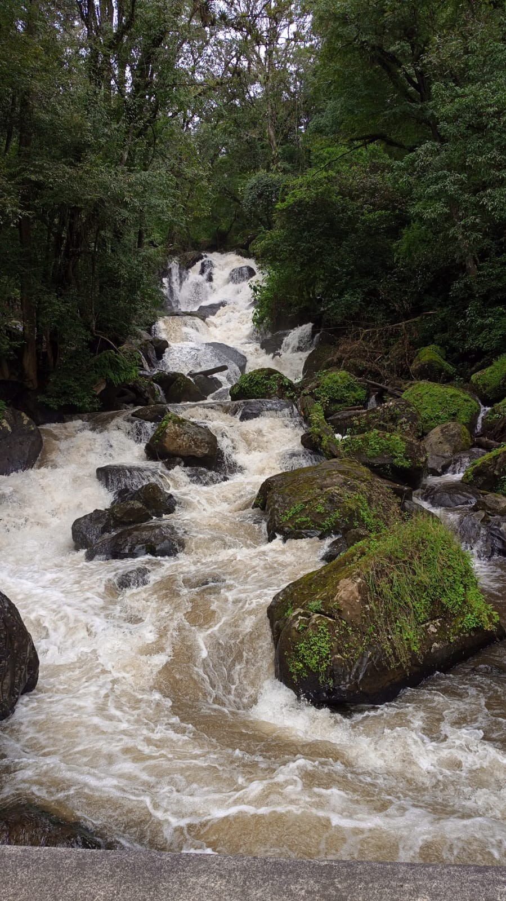
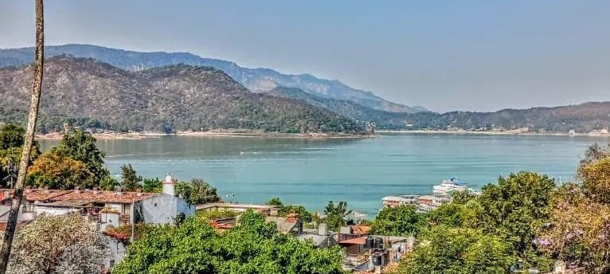

Veamos la Riquesa natural de el Municipio de Valle de Bravo
" La cascada Velo de Novia es un lugar muy atractivo que ofrece naturaleza unica y muy fresca, historia y aventura."
"La cascada, tiene aproximadamente de caida 35 metros, se encuentra en parque de Velo de Novia es muy famosa por du forma de velo de novia y tambien hay una leyenda de una joven que se arrogo con su vestido de novia por simbolo de dolor de amor."
"Ofrece actividades como senderismo, paseos en cabalo, rapel en cascada y tambien cuenta con espacios de asadores y rentas de caballos y muy bonitos miradores."

"Ubicacion: Avandaro, Valle de Bravo Carretera avandaro-valle de bravo 24hrs esta abierto todos los dias y tambien se puede subir caminando por escaleras y senderos".
"La cascada del Salto es uno de los atractivos turisticos mas visitados ideal para senderismo, tomar fotografias y descansar, despegar la mente y se rodea por arboles oyamel".
"Tambien hay lugares especificos en la cascada donde pudes hacer carne asada y hay una hermosa vista en la parte inicial de la cascada hay artesanias que te puedes llevar de recuerdo".

" Aventuras aereas como: Parapente y planeador que se practica mucho en Valle de Bravo y es uno de los mejores lugares para volar su zona de despegue se ubica en la zona de monte alto tambien puedes ir con un instructor certificado."
"Tambien hay actividaes acuaticas que puedes realizar como son: Vela que es considerado el deporte mas practicado en Valle de Bravo, esqui acuatico, kayak y tambien si lo deseas hay paseos en lancha o yate tambien puedes ver el mirador de la peña y las montañas que rodean el lago."
